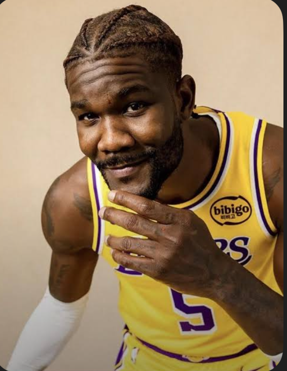

As of 2025, he is in his 23rd NBA season, breaking the previous record of 22
seasons. While this may be LeBron's last season, it's safe to say this record will
remain in place long after his retirement.
#2. Luka's Languages
Luka is fluent in 4 different languages. Watch this video to see him speak 3 languages in 1 interview:

#3. Ayton Antics
Not only is Deandre Ayton a decent basketball player, he also his many off the court talents as well.
For example, his first love was soccer where at 6'5, in 4th grade, he realized a basketball player suited his physical attributes more
than a soccer player. Growing up in the Bahamas, Ayton played the drums in church and school, but often broke the equipment,
not being aware of his own strength. He is also a passionate gamer who reached the 2020 NBA 2K Players Tournament finals.
#4. How did Rui learn English?
In addition 5-6 hours of studying daily to learn English, Rui additionally listened to rap playlists and TV shows like The Vampire Diaries.
Gonzaga's head coach Mark Few estimated Hachimura's understanding improved from 10-20 percent to 90 percent in 3 years. You can read more about it
here: Rui Fun Facts
#5. LeBron and LeBron....jr?
Yes, LeBron and his son Bronny James Jr. are teamates on the Los Angles Lakers. Bronny was selected by the Lakers as the 55th overall pick
in the 2024 NBA Draft after one season at USC. The two made NBA history as the first father-son duo to play in the league at the same time
AND share the court at the same time. Although Bronny is nowhere near as good as his father, his potential to grow and better himself is what
keeps him on the team.